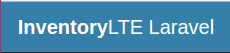

Presentacio Manuel Blanch
Pagina inicial presentació
Index 1/2
Pagines incloses
- Projecte Inventari
- Projecte paquet
- Bases de Dades
- Relacions
- Migracions
- Comandes artisan
- Vistes
- Dropdown and calendar
- Search
Index 2/2
Pagines incloses
- Usabilitat
- Api Docs
- Dashboard
- Landing Page
- Performance
- Continuous Integration
- Optimització

Projecte Inventari
El projecte es un sistema de inventari on podrem guardar objectes de l'inventari en una base de dades i que esta comunicada per diferents manteniments que mantenen una relació amb el inventari principal.
Pagina principal


Paquet Inventari
El paquet del projecte inventary esta situat en el github i tambe esta pujat al packagist.
Pagina principal packagist

Bases de dades
Les bases de dades utilitzen el sistema mysql, per a poder fer servir les bases de dades haurem de realitzar
la seva migració a traves de les comandes arisan corresponents, abans de tot haurem de crear la base de dades.
Preview de les taules que componen la base de dades